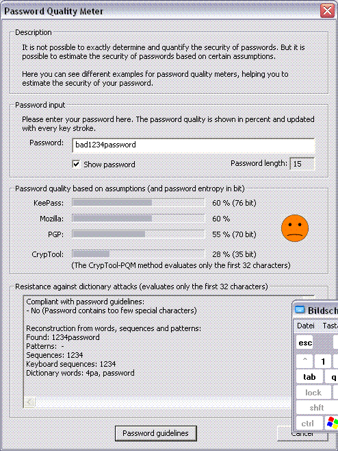

You can access this dialog using the menu entry Individual Procedures \ Tools \ Password Quality Meter.
It is impossible to exactly determine the security of a password, because too many factors play a role. This dialog contains different password quality meters helping you to estimate the security of your passwords.
For comprehensive information on passwords click here.

Please enter your password in the given input field to determine the password quality. The password quality is automatically updated with each key stroke.
The quality estimation of your password is based on four different algorithms. These algorithms come from the applications KeePass, Mozilla and PGP, which all have a password quality meter integrated. The fourth approach, which incorporates the resistance of passwords against dictionary attacks, was developed by the CrypTool team.
Besides the percental display in the lower part of the dialog there is a colored smiley. It displays the password quality in five categories ranging from poor (red) over weak (orange), average (yellow) and good (green) to great (light green). Please note that the graphical display only refers to the average result of KeePass, Mozilla, PGP and CrypTool.
Below the password input field you can select whether you want to enter the password in the clear or have it hidden with place holders (*).
The term password quality is a measure for the security of your password.
In the context of most programs offering password quality measurement, the password quality is based on the password entropy. This approach is used by KeePass and PGP for example.
Besides, there are different approaches like the one integrated in the Mozilla browser. Here the letters of the alphabet are grouped and evaluated apart (i.e. special characters and lowercase letters).
Normally, password quality is shown in percent. The scaling depends on the measurement approach: For entropy-based password quality measurement a password entropy of 128 bit is assumed to equal a password quality of 100%. But there are different approaches for quality scaling depending on the quality measurement approach used.
The two following examples will show how the different approaches to password quality measurement affect the result:
Remark:
Not all entropy-based password quality meters (i.e. KeePass, PGP) use the same technique to determine the password entropy. Therefore, the calculated entropy values may vary.
Besides the password quality estimation, it is estimated how resistant the password is against dictionary attacks. Therefore, the password is searched for patterns (i.e. "aaaaa"), sequences (i.e. "abcdef"), keyboard sequences (i.e. "qwerty") and dictionary words.
Moreover, the password is judged by certain password guidelines. These guidelines can be freely configured in the dialog Password Guidelines after clicking the Password guidelines button.
Remark:
A high password quality doesn't necessarily mean that you picked a good password!